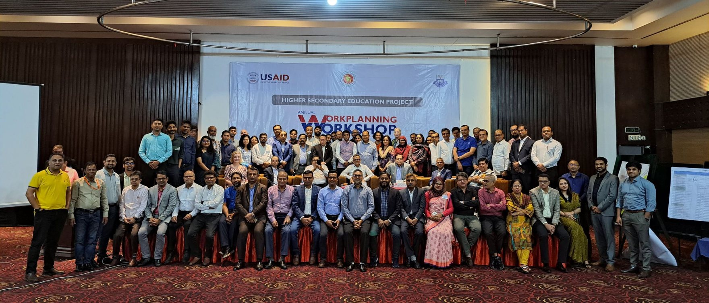
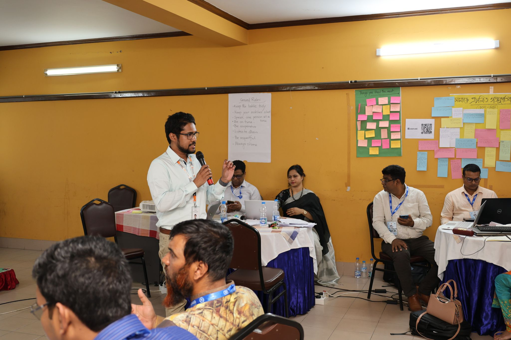
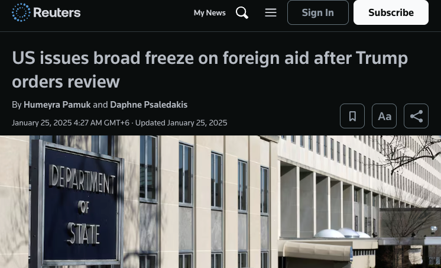

Learning analytics case study · USAID HSEP · Bangladesh
Measuring USAID's teacher training pilot in Bangladesh until the aid freeze stopped it
In late 2024, 479 college teachers and education leaders from 57 districts took the first online cohort of USAID's Higher Secondary Education Project (HSEP, also referred to as HSEA) in Bangladesh. I led the data side on the 10 Minute School team. The pilot's last module closed on January 19, 2025. Five days later a US stop-work order froze foreign aid, and the next cohort never started.

HSEP's annual work-planning workshop in Dhaka, with partners, trainers and education officials.
479Pilot participants (382 TPD, 97 ELPD)
111,693Learning events logged during the pilot
407Colleges and institutes represented
Jan 242025 stop-work order on US foreign aid
The program
A five-year, $40M plan to retrain Bangladesh's college teachers
Higher secondary education (grades 11 and 12) is often overlooked by international donors. HSEP, officially "USAID's Higher Secondary Education Activity", was the exception: a five-year program implemented by Chemonics International under Bangladesh's Directorate of Secondary and Higher Education (DSHE). Florida State University certified the training, and 10 Minute School held a $2.93M subaward to deploy and customize the learning management system (LMS) it ran on.
$40MUSAID plan, Aug 2023 to Aug 2028
12,000Trainees targeted by Sept 2025
~60,000Trainees targeted by Aug 2028
Nov 102024 pilot launch in Bogura
About 500 participants started in person at three venues (Bogura, Cumilla and Khulna), then moved online into two programs: TPD (Teachers Professional Development, 8 modules) and ELPD (Educational Leadership Professional Development, 7 modules). Going from 479 people to 12,000 in under a year meant every pilot decision would be copied about 25 times. The pilot data had to show which decisions were worth copying.

A face-to-face session during the HSEP program. The online modules picked up where these sessions ended.
My role and the team
Where the data work sat
I was a Senior BI Analyst at 10 Minute School and the data lead on HSEP. Shazzad Hossain Mukit and Shihab managed the product. Shad Iqbal led design, with product designers Moshiur Hridoy and Diponkar shaping the learning flows, peer review and discussion features. Moshiur has written up the design story, including the 21-day prototype sprint and field testing with teachers, in his own HSEP case study. This page is the other half: what the platform data said.
Modeled the LMS data in BigQuery and set the filter that kept only real pilot participants
Defined the activation, completion and peer review metrics, and built the Data Studio (formerly Looker Studio) dashboard all four partner organizations used
Built the data pipeline and scoring behind the 36-item pre-training diagnostic run at the three training sites
Re-ran every number on this page against the raw tables before publishing it
The measurement problem
Four partners, four definitions of a good pilot
Each organization opened the dashboard with a different question. If each one had picked its own favorite number, the pilot would have looked like four different projects. So the dashboard kept every metric on the same footing (enrolled teachers as the denominator, filters for batch, program, module and day) and let each partner start from the view that answered them.
What each partner needed from the pilot data
Partner
Their question
Where the dashboard answered it
USAID
Is the money reaching teachers in a way that can scale?
Enrollment and activation by batch and district
Florida State University
Are teachers learning what the curriculum teaches?
Exam attempts and scores, the pre-training diagnostic
Chemonics International
Is the rollout on schedule?
Completion by each module's end date, peer review throughput
DSHE (Ministry of Education)
Are college teachers taking it up?
Activity by district and institution type, learning time
The data model
One row for every teacher and every piece of content
The LMS wrote to several services: reading and video logs, exam sessions, peer review, and the live-class schedule. Those synced into BigQuery, and the reporting model joined them into a grid with one row for each enrolled teacher and each content item in their batch, 109,180 rows in all. An empty timestamp means the teacher never opened that item. That made "who hasn't started Module 3" as easy to ask as "who finished it", which a plain event log can't answer without extra work.
LMS servicesLogs, exams, peer review, live classes
BigQueryRaw tables from each service
Teacher × content modelReal participants only, matched to the official pilot list
Data StudioFilters for batch, program, module and day
Activated: opened at least one content item from that module-day.
Completed: finished 80% or more of that module-day's content.
Both rates divide by enrolled teachers, so a teacher who goes quiet pulls the rate down instead of dropping out of it.
Timestamps are stored in UTC. Anything about time of day is converted to Bangladesh time (UTC+6) first.
What the data showed
Teachers kept showing up. They finished a little less as each module went on
Every TPD module runs five days. Averaged over all 8 modules, the share of teachers who opened something each day never fell below 92.7%. Completion at the 80% bar started at 94.2% on Day 1 and ended at 77.9% on Day 5. Day 4 is the exception in the chart: it holds a single task or live session, so anyone who opened it also completed it.
The same slow slide shows up across modules. In TPD, completion went from 93% in Module 1 to 84% in Module 8. Counting only work finished before each module's deadline, 70% to 82% of TPD teachers completed on time.
Activation (opened at least one item) Completion (80% or more of the day)
Peer review held up at one reviewer and strained at two
Submitting work was never the weak point: 95% of TPD teachers handed in at least one task, and 84% were still submitting in Module 8. The strain was on the reviewing side. Every submission went to classmates for review, and each task set a minimum. Where one review was enough, 92% of submissions got it. Where the task asked for two, only 55% reached the bar, even though 89% got at least one. The second reviewer was the one who often never came.
Tasks needing 1 review (2,051 TPD submissions)
92%
Tasks needing 2 reviews (647 TPD submissions)
Gap
55%
Share of submissions that reached the task's review minimum, from the peer review service's own task settings.
Who finished, and when they studied
Teachers studied after college hours. Activity was heaviest between 6 PM and 11 PM Bangladesh time and peaked at 8 PM. The typical TPD teacher logged about 10.5 hours of reading and video, and that excludes time spent in exams and live classes, which the logs don't record. In exams, TPD teachers made 8,778 attempts across 13 exams, about 1.9 tries per exam, and averaged 77%. ELPD averaged 84%.
Completion also varied by type of institution. Women were only 51 of the 479 teachers, but their module completion rate matched the men's at 88%.
MPO colleges (105 teachers)
95%
Government colleges (268)
89%
Non-MPO colleges (58)
83%
Higher Secondary Teachers' Training Institutes (31)
77%
Module completion rate (80% bar) by institution type. MPO colleges are non-government colleges that receive government salary support.
The pre-training diagnostic pointed at two beliefs
Before the online modules, teachers at all three training sites answered a 36-item diagnostic on Knowledge, Skills and Attitudes. Knowledge was the weakest area at 68% to 71% correct, against 79% to 86% for the other two. The lowest items clustered around two ideas: that action research is only about end-of-term grading, and that every student should get the same instruction regardless of age, gender or ability. Changing that second belief was the point of the differentiated-instruction content.
"Action research involves only summative assessment" (should disagree)
Below 50%
30%
"Same instruction regardless of age, gender, or ability" (should disagree)
Below 50%
37%
"Instruction should stay the same for all students" (should disagree)
Below 50%
39%
"Engaged Learning Pedagogy can't work online" (should disagree)
60%
"Engaged learning only works in small classes" (should disagree)
74%
Average share answering correctly across Cumilla, Khulna and Bogura. Items under 50% were flagged as priorities for the next training phase.
The shutdown
The pilot finished. The next cohort never started
The pilot launched five days after the 2024 US presidential election, and its last module closed the day before the new administration took office. What followed moved fast.
Nov 10, 2024Pilot launches in Bogura, with Cumilla and Khulna linked in.
Nov 17, 2024First online module unlocks on the platform.
Jan 19, 2025Last pilot module closes.
Jan 20, 2025An executive order pauses new US foreign aid spending for a 90-day review.
Jan 24, 2025The State Department issues a stop-work order on existing aid grants and contracts.
Jan 26, 2025USAID tells all its partners in Bangladesh to suspend spending until further notice.
Feb 2025Three pilot teachers log 10 events between them, all month.
Mar 10, 2025The Secretary of State announces that 83% of USAID programs are cancelled.
Jul 1, 2025USAID closes and the State Department takes over foreign assistance.

Reuters, January 25, 2025.
The edge in the data is clean. 99% of all pilot activity happened on or before January 25. Teachers doing graded work (exam attempts or task submissions) went from more than 420 a month to none.
Teachers doing graded work each month
Nov '24461
Dec '24466
Jan '25422
Feb '250
Out of 479 pilot teachers. Pilot modules ran Nov 17 to Jan 19. Stop-work order: January 24, 2025.
Reaching 12,000 trainees by September 2025 depended on the cohorts that were supposed to follow the pilot, and none of them launched. HSEP was not alone. The Daily Star reported that 55 of the 59 USAID projects in Bangladesh were shut down, costing the country about $700M in aid. Public records don't list a termination date for HSEP itself. The logs show the work stopped when the stop-work order arrived.
What I took from it
Lessons I still use
Pick the denominator before anyone sees a chart. Dividing every rate by enrolled teachers made the dashboard hard to flatter, and it meant four organizations with different goals were reading the same number.
Measure against what the system asked for. The design notes imagined three peer reviewers per submission. The platform asked for one or two. Which bar you pick decides whether peer review looks like it worked.
The dataset outlives the program. When funding stopped overnight, the BigQuery tables were what remained. Every number here was re-run from them more than a year and a half later.
From data models in BigQuery to dashboards that funders, researchers and government teams can read the same way, happy to help programs measure what they are doing while it is still running.